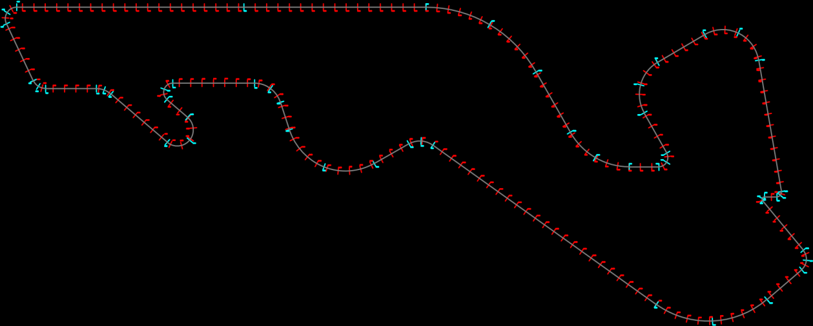
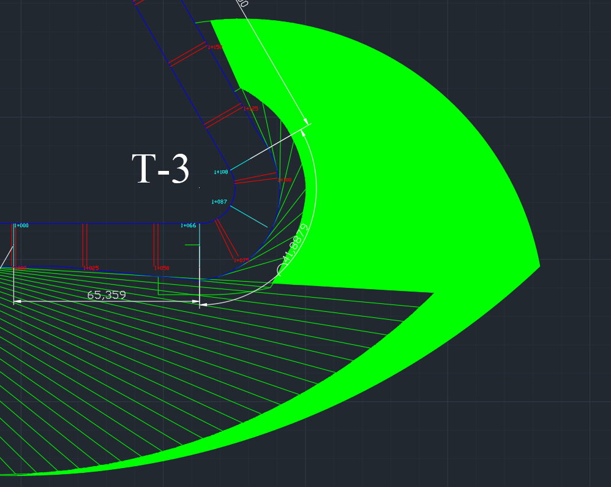
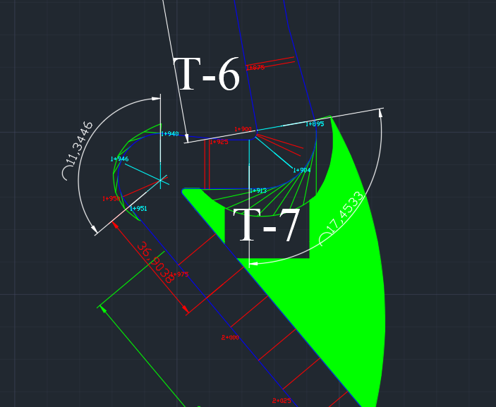
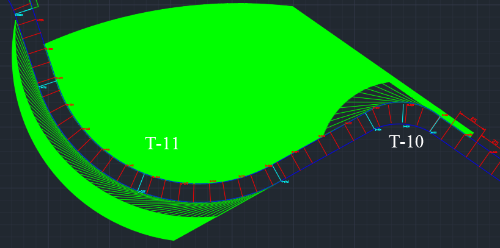
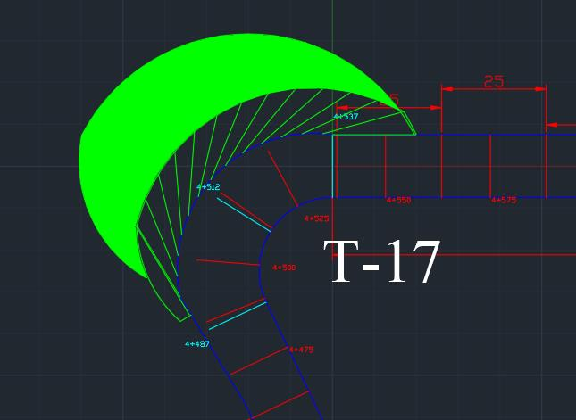
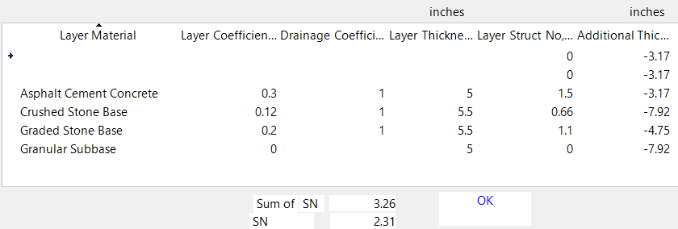

Starting question
How can one lap create overtaking decisions without becoming a sequence of slow corners and long straights?
Engineering case study · 2019
A 17-turn concept where every sporting decision had to survive an engineering check.
Concept-level academic work. The criteria shown are those available to the team in 2019; this is not a homologated or construction-ready circuit design.

The assignment was not simply to draw a loop. The circuit needed a readable competitive idea: places to attack, places to defend, sections that rewarded different driving styles, and enough safety envelope for the speeds the layout could create.
How can one lap create overtaking decisions without becoming a sequence of slow corners and long straights?
Motorsport precedents, FIA criteria cited in the original report, telemetry, expert input, and civil engineering design checks.
Plan geometry, corner-speed estimates, crossfall schedule, runoff envelopes, and a preliminary flexible pavement section.
Senior design work by Bora Güzel, Efehan Sevindik, and Namık Buğra Akın at MEF University.
The useful story is not the finished outline. It is the order in which uncertainty was reduced.
What should the driver feel?
Reference circuits and an interview with racing driver and automotive engineer Jason Tahincioğlu established the sporting intent: variable-radius corners, sustained lateral load, and straights that reward the quality of the preceding corner exit.
Output · A 5–6 km target, a main straight shorter than 1 km, a sub-110-second lap target, and a mix of high-load and technical corners.
What must the drawing respect?
The team converted the available circuit criteria into geometric controls before refining the racing line: minimum widths, grid width, straight length, crossfall, banking, and the approach to the first qualifying corner.
Output · 12 m minimum track width, 15 m starting-grid width, a 900 m main straight, and banking kept below 10 percent.
Why does each part exist?
Instead of distributing corner types evenly, the lap was divided into three arguments: an opening overtaking sequence, a rhythm-and-acceleration middle sector, and a technical final sector that determines the launch onto the main straight.
Output · Seventeen turns arranged as three distinct performance problems rather than seventeen isolated curves.
What loads does the layout create?
Corner radii, a 325 km/h conceptual top speed, acceleration data, and telemetry were combined in a simplified speed model. Crossfall was then scheduled between −4 and +4 percent, with a team-imposed transition limit of one percentage point per 25 m.
Output · Turn-by-turn design speeds and a continuous crossfall strategy that supports drainage without abrupt load changes.
Where can the car go when control is lost?
Runoff was not treated as leftover land. The team modelled departure within a corner and loss of control at the braking point, using the higher-energy case to expand the envelope where required.
Output · AutoCAD runoff vectors based on 22.775 m/s² average braking deceleration and a 10 percent speed margin.
Does the pavement concept close?
A flexible pavement section was tested with the AASHTO structural-number method in WinPAS. The proposed asphalt and stone layers were compared with the calculated demand.
Output · Required structural number 2.31; proposed structural number 3.26.
The circuit was designed as a sequence of choices. Each sector changes what the driver has to protect: braking position, rhythm, or exit speed.
Turn 2 opens the line into the heavy-braking Turn 3. Turns 4 and 5 then replace the passing duel with sustained lateral load.
T1—T5 · braking duel + high GThe low-speed, off-camber Turn 6–7 chicane interrupts the flow. Turns 8 and 9 progressively release the car toward a 600 m acceleration zone.
T6—T9 · precision + accelerationThe Turn 10–12 esses test consistency. Turn 13 creates another passing chance, while Turn 17 makes the final exit matter for the entire main straight.
T10—T17 · rhythm + exit disciplineThe runoff study started at the track edge, not at an assumed racing line. That preserved the pavement width as tolerance and tested what happens after the driver has already lost the intended path.
Scenario A
The car leaves the track at the assigned maximum corner speed. Radial departure vectors establish the base runoff envelope.
Scenario B
The car loses control before slowing for the corner. The higher approach speed usually creates the governing envelope.




The preliminary flexible pavement combined asphalt concrete, crushed-stone base, graded-stone base, and granular subbase. WinPAS was used to compare the proposed layer structure with the AASHTO structural-number requirement.
Concept margin: 0.95 structural-number units. Final materials and thicknesses would still depend on site-specific traffic, climate, drainage, and geotechnical testing.

This project proves a coherent method, not a finished venue. A professional next phase would replace simplified assumptions with a real site, validated models, and independent safety review.
Rewritten project report
The original 85-page submission has been professionally rewritten and reorganized into a focused 24-page report while preserving the project data, calculations, figures, assumptions, and limitations.